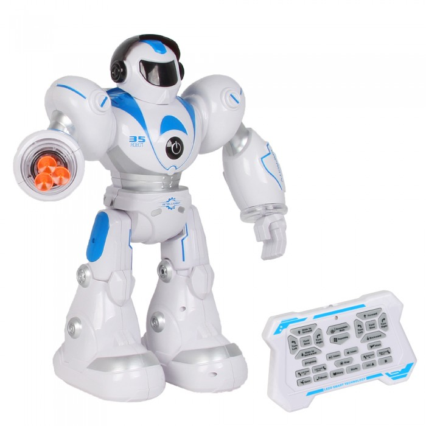
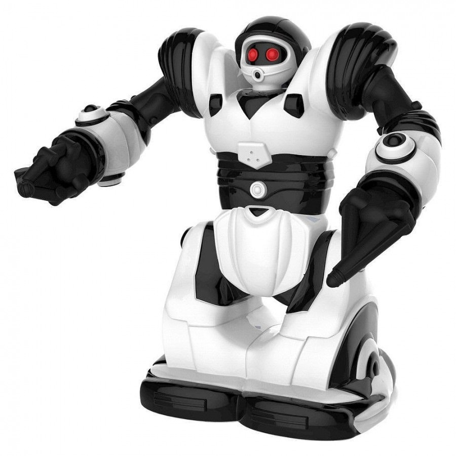

Исторический обзор
Роботы-игрушки начали набирать популярность в 1990-х годах, когда на рынок стали поступать первые интерактивные модели. Эти роботы были способны реагировать на команды, выполнять простые действия и развлекать детей. Одним из первых таких роботов стал знаменитый "Робо-Кид", который мог двигаться, издавать звуки и даже распознавать простые голосовые команды. С каждым годом технологии совершенствовались, и уже в начале 2000-х появились роботы, способные взаимодействовать с другими устройствами, такими как компьютеры и игровые консоли. Это стало возможным благодаря развитию микроэлектроники и программного обеспечения, что позволило создавать более сложные и функциональные устройства.
«Развитие роботов-игрушек стало возможным благодаря технологиям 21 века. Мы наблюдаем, как они превращаются из простых развлекательных устройств в мощные инструменты для обучения и развития детей.» — Известный инженер
В настоящее время роботы-игрушки имеют огромный функционал. Современные модели оснащены камерами, сенсорами, микрофонами и даже искусственным интеллектом, что позволяет им обучаться и адаптироваться к поведению пользователя. Например, некоторые роботы могут распознавать лица, запоминать предпочтения владельца и даже подстраивать свои действия под настроение ребенка. Большинство таких игрушек интегрируются с мобильными приложениями, предоставляя широкий спектр возможностей для кастомизации и игр. В частности, роботы для обучения могут помогать детям осваивать основы программирования, математики, а также развивать логическое мышление. Они становятся настоящими компаньонами, которые не только развлекают, но и учат.
Одним из ярких примеров современных роботов-игрушек является робот-собака, которая может имитировать поведение настоящего питомца. Она реагирует на прикосновения, выполняет команды и даже "обучается" новым трюкам. Такие игрушки особенно популярны среди детей, которые мечтают о домашнем животном, но по каким-то причинам не могут его завести. Кроме того, роботы-игрушки активно используются в образовательных целях. Например, роботы-конструкторы позволяют детям собирать и программировать свои собственные устройства, что способствует развитию инженерных навыков и креативного мышления.
Будущее роботов-игрушек выглядит еще более впечатляющим. С развитием технологий виртуальной и дополненной реальности, а также с улучшением возможностей искусственного интеллекта, такие устройства станут еще более интерактивными и полезными. Уже сейчас существуют прототипы роботов, которые могут взаимодействовать с виртуальными объектами, создавая уникальный игровой опыт. Кроме того, ожидается, что в ближайшие годы роботы-игрушки станут более доступными по цене, что позволит большему количеству семей наслаждаться их преимуществами. В конечном итоге, такие устройства могут стать неотъемлемой частью детства, помогая детям учиться, развиваться и находить новые способы взаимодействия с миром технологий.
Однако, несмотря на все преимущества, важно помнить о балансе между использованием технологий и традиционными формами игры. Роботы-игрушки, безусловно, могут быть полезными, но они не должны полностью заменять живое общение, творчество и физическую активность. Родителям стоит внимательно подходить к выбору таких устройств, учитывая возраст и интересы ребенка, а также следить за тем, чтобы время, проведенное с роботом, не превышало разумных пределов. В конце концов, главная цель любой игрушки — это радость и развитие, а не просто развлечение.
В заключение можно сказать, что роботы-игрушки прошли долгий путь от простых механических устройств до сложных интеллектуальных систем. Они стали не только инструментом для развлечения, но и важным элементом образовательного процесса. С каждым годом их возможности расширяются, и, вероятно, в будущем мы увидим еще более удивительные и полезные модели, которые помогут детям раскрыть свой потенциал и подготовиться к жизни в мире, где технологии играют ключевую роль.
Для изучения STEM-дисциплин используются специальные роботы, которые способствуют обучению в игровой форме, что значительно повышает мотивацию детей к изучению технических наук.
Кроме того, роботы-игрушки могут служить не только образовательными инструментами, но и развлекательными средствами. Например, роботы с элементами искусственного интеллекта могут имитировать эмоции, реагировать на голосовые команды, а также взаимодействовать с окружающими предметами. Они могут стать отличными друзьями для детей, предлагая разнообразные игры и задания, которые развлекают и обучают одновременно.
Таблица развития роботов-игрушек
| Год | Характеристики | ||
|---|---|---|---|
| Модель | Особенности | Изображение | |
| 1995 | Робот А | Программируемый, базовые действия |  |
| 2000 | Робот Б | Интерактивный, распознавание голоса |  |
| 2010 | Робот С | Дистанционное управление, подключение к Wi-Fi |  |
| Таблица демонстрирует эволюцию роботов-игрушек. | |||
Список популярных моделей
- Программируемый, базовые движения
- Интерактивный, распознавание голоса
- Сенсоры движения, дистанционное управление
Галерея изображений
Мультимедийный контент
Посмотрите видео с демонстрацией роботов-игрушек:
Послушайте аудио-интервью с разработчиками роботов:

Дата публикации: